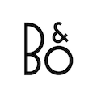
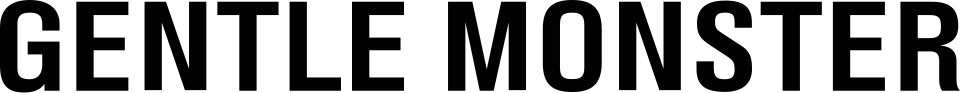

홈 > 브랜드 매거진 > 아더에러
아더에러
아더에러(ADER ERROR)는 2014년 출범한 대한민국의 컨템포러리 패션 브랜드다. 익명의 디자이너 콜렉티브가 운영하며 그래픽·유니섹스 실루엣과 다양한 협업으로 알려졌다.
산업 분야 패션·럭셔리 · 공개 등급 자료 기반 · 브랜드 평가 4.2 ★
AE
아더에러
한눈에 보는 브랜드
아더에러는 2014년 서울에서 디자인·건축·광고·사진 등 다양한 배경의 익명 창작자들이 '크루' 형태로 모여 출범한 한국 컨템퍼러리 패션 브랜드다. '미완성과 실수의 미학'을 전면에 내세워 국내보다 해외에서 먼저 입소문을 탔다.
첫 전환점은 2020년 전후 메종키츠네·푸마·컨버스와의 연쇄 협업으로 글로벌 인지도를 확보한 시기이고, 두 번째는 2021~2022년 자라와의 대형 협업으로 매스 시장까지 영향력을 넓힌 시점이다. 2023년 순이익은 약 65억원 규모로 보고된 바 있으며, 2025년 8월 도쿄 오모테산도에 첫 글로벌 플래그십을 열며 아시아 확장에 본격 진입했다.
브랜드 관점
경쟁군인 우영미·준지가 정통 컨템퍼러리 테일러링으로 파리·뉴욕 백화점을 공략했다면, 아더에러는 '의도된 오류'라는 콘셉트를 무기로 차별화한다. 비뚤어진 로고, 어긋난 봉제선, 어긋난 프린트를 결함이 아니라 디자인 언어로 재정의하고, 시그니처 블루로 '몰입'과 '청춘'을 시각화하는 아트·콘셉트 전략이 핵심이다.
익명 집단 체제는 스타 디자이너 중심의 업계 관행을 비틀어, 브랜드를 개인이 아닌 아이디어와 아카이브 중심으로 운영하게 한다. 최근 변화의 함의는 분명하다.
협업으로 쌓은 화제성을 2025년 도쿄·오사카·고베 직영 매장망으로 전환하며 '화제 브랜드'에서 '자체 유통을 갖춘 글로벌 하우스'로 체질을 바꾸고 있다는 점이다. 이는 마르디 메크르디·마뗑킴·앤더슨벨 등 신진 K-패션이 동시에 해외로 향하는 흐름 속에서, 협업 의존을 줄이고 독자 세계관과 공간 경험으로 승부하려는 포석으로 읽힌다.
시작과 성장
2010년대 초 서울에서는 언더그라운드 아트·사진·디자인 신과 스트리트 문화가 교차하며 새로운 창작 공동체가 싹트던 시기였다. 이 토양에서 2014년, 정체를 드러내지 않은 창작자들이 모여 아더에러를 출범했다.
이름은 미학(aesthetic)에 드로잉(drawing)을 더해 '미학을 그리는 사람들'을 뜻하고, 뒤에 붙은 '에러'는 실수로 치부되던 불완전함을 긍정으로 바꾸겠다는 선언이다. 첫 전환점은 2020년 전후 메종키츠네·푸마·컨버스와의 협업으로, 한국 밖에서 먼저 이름을 알리며 글로벌 패션계의 주목을 받은 일이다.
두 번째 전환점은 2021년 자라와의 첫 캡슐, 이어 2022년 '사이클 A to Z' 협업으로 매스 마켓까지 확산되며 대중 인지도를 끌어올린 사건이다. 이후 확장은 공간으로 이어졌다.
2024년 말 성수 공간을 10주년에 맞춰 리뉴얼했고, 2025년 4월 오사카 한큐 우메다 본점에 일본 첫 풀라인 매장, 같은 해 8월 도쿄 오모테산도에 첫 글로벌 플래그십 '아더에러 도쿄 스페이스'를 열며 아시아 시장 공략을 가속했다.
브랜드 아이덴티티
핵심 가치는 '창의적 오류'다. 완벽함 대신 불완전함을, 정답 대신 편집과 아카이브를 중시한다.
비주얼 아이덴티티는 시그니처 블루가 중심으로, 브랜드는 이를 무언가에 깊이 빠져드는 '몰입'과 가장 빛나는 순간인 '청춘'의 색으로 정의한다. 가장 단순한 사각형을 비틀어 만든 테트리스형 로고와 지그재그 선은 편집과 성장, 불완전함을 동시에 담는다.
타깃은 성별 경계를 지운 유니섹스 지향의 글로벌 MZ 소비자로, 패션을 넘어 아트·공간·오브제를 함께 즐기려는 층이다. 브랜드 보이스는 익명성과 실험성을 바탕으로, 자신을 드러내지 않은 채 메시지와 작업 자체로 말하는 절제되고 개념적인 톤을 유지한다.
확장 지식
2014년 'Be the ___'를 슬로건으로 출범했고 컨버스·자라 등과의 협업으로 대중 인지도를 넓혔다.
제품과 서비스
사람들
익명의 디자이너 콜렉티브가 운영한다.
현재 상태
본사는 서울에 있으며, 디자인과 공간 설계를 서울 본사가 직접 수행한다. 익명 창작 집단 체제로 운영되어 개별 창업자·대표는 공개하지 않는다.
매출은 비상장 법인 특성상 제한적으로 알려져 있으며, 2023년 순이익은 약 65억원 규모로 보고된 바 있다. 2024~2025년 매출·영업이익 등 구체 재무 수치는 미공개다.
직영 유통은 2025년 일본 오사카·고베·도쿄로 확대됐다.
타임라인
BI/CI 변천사
확인된 BI/CI 이미지가 아직 없습니다.
함께 읽을 브랜드
 패션·럭셔리 · 편집 검수자라
패션·럭셔리 · 편집 검수자라자라는 패션을 예측하기보다 시장의 반응을 빠르게 읽고 다시 매장으로 돌려보내는 브랜드다. 트렌드를 길게 기획하는 대신 고객 반응과 유통 속도를 무기로 삼아, 패션을...
마뗑
마뗑킴
패션·럭셔리 · 디렉토리마뗑킴 패션·럭셔리 · 디렉토리마르디 메크르디
패션·럭셔리 · 디렉토리마르디 메크르디 패션·럭셔리 · 편집 검수샤넬
패션·럭셔리 · 편집 검수샤넬샤넬은 패션을 장식이 아니라 태도와 해방의 언어로 바꾼 브랜드다. 브랜드의 힘은 제품의 고급스러움뿐 아니라 여성의 몸과 생활 방식을 새롭게 해석한 상징성에서 나온다.
 패션·럭셔리 · 매거진 완성프라다
패션·럭셔리 · 매거진 완성프라다프라다는 아름다움을 익숙한 화려함보다 지적인 긴장감으로 표현하는 브랜드다. 소재와 형태, 절제된 색감은 패션을 단순한 장식이 아니라 관찰과 해석의 대상으로 만든다.
 패션·럭셔리 · 매거진 완성스와치
패션·럭셔리 · 매거진 완성스와치스와치는 시계를 고가의 정밀기기에서 매일 바꿔 착용할 수 있는 패션 언어로 전환했다. 시간을 알려주는 기능보다 색, 그래픽, 컬렉션, 가벼운 가격대가 브랜드 경험의...

기술·전자 · 매거진 완성뱅앤올룹슨뱅앤올룹슨은 오디오를 가전제품이 아니라 공간 속 오브제로 다루는 브랜드다. 소리의 품질뿐 아니라 제품이 놓이는 방식, 재료, 형태, 조작 경험까지 디자인의 일부로 통...

패션·럭셔리 · 편집 검수젠틀몬스터젠틀몬스터는 2011년 서울에서 김한국이 창립한 한국 럭셔리 아이웨어 브랜드입니다. 선글라스와 안경테를 중심으로 전개하며, 서울 기반의 아이아이컴바인드가 운영합니다....